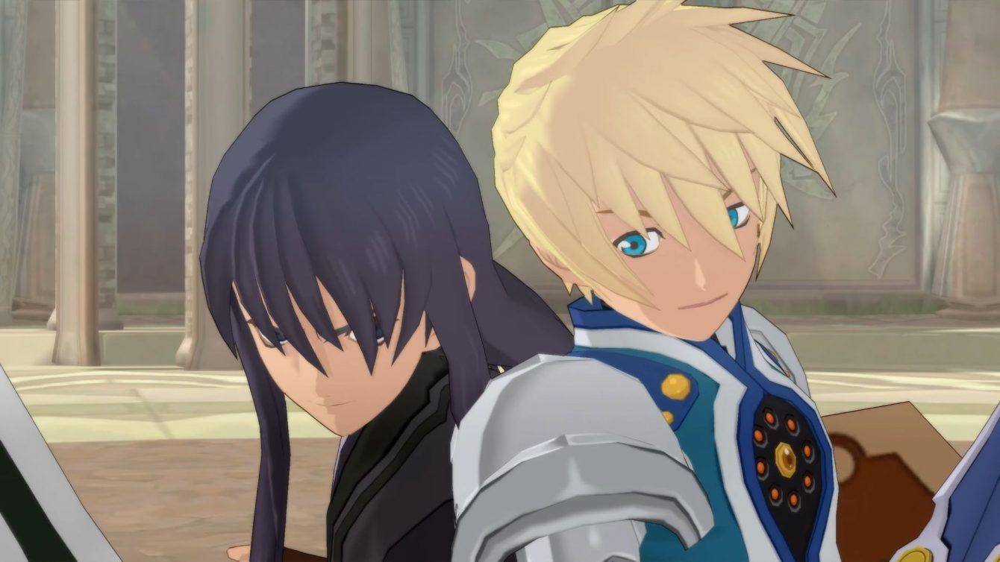
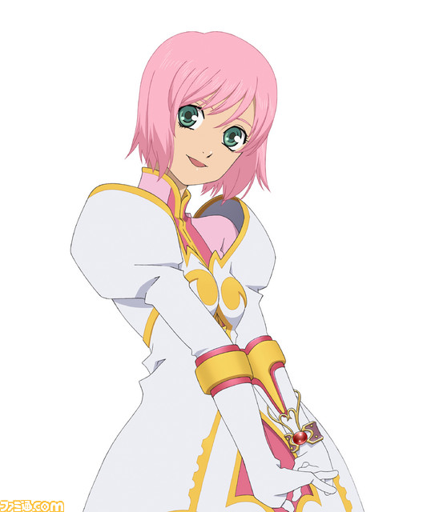
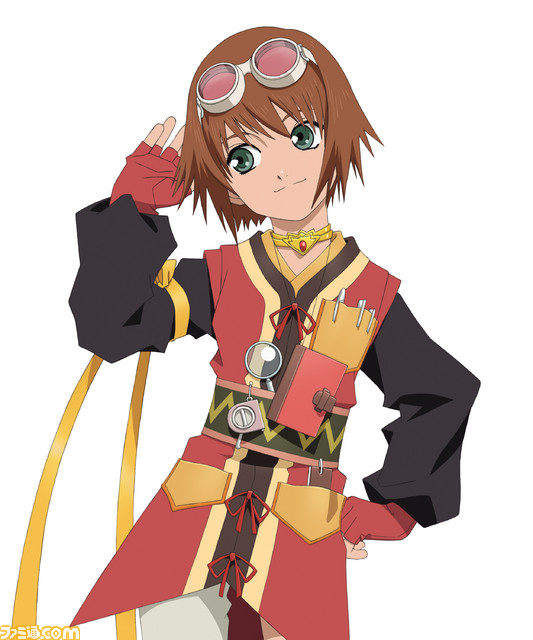

Tales of Vesperia: Definitive edition
Creada para la celebración de su décimo aniversario, Tales of Vesperia Definitive Edition trae uno de los JRPGs más adorados a todas las consolas modernas.
Tales of Vesperia, una de las entregas más populares de la serie 'Tales of' vuelve con una resolución de pantalla mejorada y personajes, eventos y trajes que no habían aparecido nunca fuera de Japón.
Comienza una lucha de poder en una civilización que depende de una antigua tecnología —Blastia— y el imperio que la controla. El destino de dos amigos que recorren caminos separados se entrelaza en una aventura épica que amenaza la existencia de todos.
- Fecha de lanzamiento: 11/01/2019
- Géneros: JRPG
- Desarrollador: BANDAI NAMCO Studios Inc.
- Plataformas: Xbox One, PS4, Nintendo Switch, PC
Sobre el juego
Una querida historia que regresa
La historia de un joven héroe en busca de justicia que cautivó a los fans de 'Tales of' vuelve a Xbox One, PS4, Nintendo Switch y PC.
Todo en una misma edición
¡Sumérgete en la Definitive Edition de Tales of Vesperia con sus gráficos actualizados, una increíble banda sonora, emocionantes minijuegos, jefes y todo un guardarropa nunca antes publicado!
El grupo se refuerza
Yuri emprende su aventura con Estelle, una joven noble; Karol, un chico en busca de un gremio en el que integrarse; Rita, una erudita excéntrica; Raven, un relajado arquero; Judith, una misteriosa dragona; y Repede, un perro que fuma en pipa... Y, además, se incluyen dos nuevos personajes jugables: Flynn Scifo, el rival y mejor amigo del personaje principal; y Patty Fleur, una joven pirata que quiere recuperar sus recuerdos perdidos.
Lucha con estilo
¡Reúne a tu equipo favorito y disfruta de emocionantes combates en tiempo real con sus habilidades y Artes Místicas! Tales of Vesperia: Definitive Edition cuenta con una versión especial del LMBS (sistema de combate dinámico lineal, por sus siglas en inglés) que ya es un emblema en la franquicia 'Tales of'. Los jugadores controlarán a un miembro del grupo en tiempo real, mientras que los otros tres estarán controlados por la IA y harán exactamente lo que se le haya indicado a través de una serie de órdenes personalizadas. Durante los combates, los jugadores podrán cambiar entre los cuatro personajes en cualquier momento, así como emplear ataques físicos, lanzar artes o incluso recurrir a poderosas artes místicas.
¡Une fuerzas con tus amigos!
Utilizando el sistema de co-op local, también puedes optar por sumar hasta 3 jugadores más, cada uno controlando uno de los 9 personajes disponibles. ¡Redescubre esta emocionante historia con amigos o familia!
Conocé los personajes
Yuri Lowell

El personaje principal del juego, un joven que vive en los barrios bajos de la capital, Zaphias, y ayuda a los necesitados. Es muy sarcástico y cínico pero tiene una buena formación. Al igual que su amigo de la infancia Flynn, una vez fue un caballero, lo que le dio la libertad de hacer viajes cortos fuera de su ciudad natal, pero se retiró debido a su aversión al gobierno. Ahora trabaja como guardaespaldas. Envidioso de Flynn, decide irse de la ciudad por su cuenta. Después de los hechos que lo llevaron a ser encarcelado, conoce a la princesa Estelle y parten juntos para descubrir el mundo más allá de la capital, Zaphias.
Interpretado por: Toriumi (JP) / Troy Baker (EN)
Estellise Sidos Heurassein
Si bien nombre real es Estellise, Yuri la apoda "Estelle", nombre que adopta por el resto de la aventura. Permaneció encerrada durante mucho tiempo en su castillo de Zaphias donde aprendió a luchar con espada. Queriendo explorar el mundo, aprovecha la oportunidad y se va con Yuri fuera de la capital. Está muy sorprendida de lo que descubre sobre el mundo y le gusta aprender leyendo libros.
Interpretado por: Hara (JP) / Ito (EN)
Flynn Scifo
Un caballero que lucha con espada y escudo. Compartió su infancia con Yuri aunque estuvieron muy contrastados, tanto física como eticamente. Tiene los mismos ideales de ayudar a los demás, pero antepone los intereses del gobierno. Como caballero, viaja regularmente para matar monstruos.
Interpretado por: Miyano (JP) / Riegel (EN)
Repede
Si, es un perro. Si, tiene una pipa. Si eso no los convence de probar este juego, nada lo hará. Es muy amigable con los que acepta, pero odia cuando alguien que no conoce intenta tocarlo.
Interpretado por: Ishii
Rita Mordio
Una investigadora de Aspio que estudia Blastia y odia que la interrumpan durante su investigación. Es una persona solitaria a la que no le gusta entablar relaciones con nadie. Karol la fastidia y no duda en ponerlo en su lugar cuando tiene la oportunidad.
Interpretada por: Morinaga (JP) / Ruff (EN)
Karol Capel
Es un niño pequeño que dice ser parte del gremio "Les Lames Chasseresses". Ciertas circunstancias lo harán unirse al grupo de Yuri. A pesar de su buen humor, es bastante tímido y carece de confianza en sí mismo.
Interpretado por: Watanabe (JP) / Ann Taylor (EN)
Judith
Judith es una mujer joven y bonita de la tribu Krytian Moviéndose sobre la espalda de un dragón llamado Ba'Ul. A pesar de unirse al grupo, Judith tiene una misision secreta y no dejará que nada le impida cumplirla.
Interpretada por: Hisakawa (JP) / Lees-Taylor (EN)
Raven

Un hombre misterioso al que le gustan las cosas sencillas. Conoce a Yuri al comienzo del juego mientras están en la cárcel. Tiende a molestar al grupo con sus bromas, pero sabe cómo ponerse serio cuando es necesario. Sin embargo, sufre de un pasado del que no quiere hablar.
Interpretado por: Takemoto (JP) / J. Thomas (EN)
Patty Fleur
Una joven pirata que viaja por el mundo en busca del romance y el legendario tesoro del famoso pirata Aifread. A pesar de su apariencia, tiene una personalidad y forma de expresarse más acordes a las de un anciano.
Interpretada por: Saïto (JP) / Fox (EN)
Nuestra merch
Contactanos
Si te interesa adquirir algún objeto de nuestra merch, o te interesa participar de alguno de nuestros eventos, no dudes en dejarnos tus datos.
*Campos obligatorios